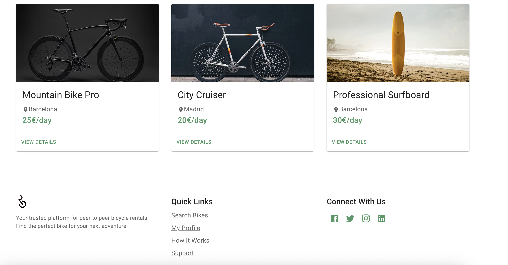
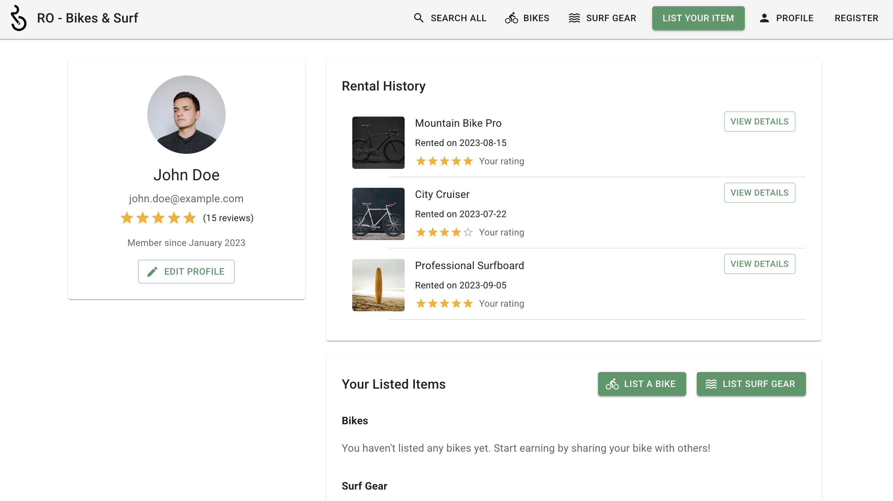

ROD – Aplicação P2P para Aluguer de Bicicletas
Uma plataforma móvel inovadora para conectar proprietários e utilizadores de bicicletas, promovendo a mobilidade sustentável nas cidades.
Descrição Geral
ROD é uma aplicação móvel peer-to-peer que revoluciona a mobilidade urbana ao permitir que proprietários de bicicletas aluguem seus veículos diretamente a utilizadores interessados, criando uma rede de mobilidade sustentável e acessível.
A plataforma oferece uma solução completa que inclui informações detalhadas sobre as bicicletas disponíveis, sistema de reservas, pagamentos seguros e comunicação direta entre as partes, tudo através de uma interface intuitiva e amigável.
Além de proporcionar uma alternativa de transporte ecológica, a ROD contribui para a economia circular ao permitir que proprietários monetizem bicicletas subutilizadas, reduzindo a necessidade de novas produções e promovendo o uso compartilhado de recursos.
Funcionalidades Principais
A ROD oferece um conjunto abrangente de funcionalidades para facilitar o aluguer de bicicletas entre particulares.
Catálogo Detalhado
Informações completas sobre cada bicicleta disponível, incluindo tipo, especificações técnicas, condição, preço e disponibilidade, com fotos de alta qualidade e localização no mapa.
Sistema de Reservas
Processo simplificado para reservar bicicletas por hora, dia ou períodos mais longos, com confirmação automática ou manual pelo proprietário, dependendo das preferências definidas.
Pagamentos Seguros
Sistema integrado de pagamento que processa transações de forma segura, com depósito de caução opcional e liberação do pagamento apenas após a confirmação da entrega da bicicleta.
Comunicação Integrada
Chat interno que permite a comunicação direta entre proprietários e utilizadores para esclarecer dúvidas, negociar condições ou coordenar a entrega e devolução das bicicletas.
Elementos Inovadores
A ROD incorpora tecnologias e abordagens inovadoras para maximizar a experiência dos utilizadores e o impacto positivo no meio ambiente.
Geolocalização Inteligente
Sistema avançado que permite localizar bicicletas disponíveis nas proximidades, com filtros personalizáveis por distância, tipo de bicicleta e preço, otimizando a experiência de busca do utilizador.
Sistema de Avaliação Mútua
Mecanismo de avaliação bidirecional que permite que tanto proprietários quanto utilizadores construam reputação na plataforma, aumentando a confiança e segurança para todos os participantes.
Sugestão de Rotas Cicláveis
Integração com dados de rotas cicláveis seguras, permitindo que utilizadores menos experientes encontrem os melhores percursos para seus deslocamentos, incentivando o uso da bicicleta mesmo por iniciantes.
Contributo para a Transição Climática
A ROD oferece benefícios significativos para o meio ambiente e para a mobilidade urbana sustentável.
Redução das Emissões de CO₂
Ao promover o uso de bicicletas em substituição a veículos motorizados, a ROD contribui diretamente para a redução das emissões de gases de efeito estufa nas cidades, melhorando a qualidade do ar urbano.
Apoio à Mobilidade Sustentável
A plataforma incentiva a adoção de meios de transporte não poluentes, contribuindo para a redução do congestionamento urbano e para a criação de cidades mais habitáveis e centradas nas pessoas.
Fomento à Economia Circular
Ao permitir que proprietários monetizem bicicletas subutilizadas, a ROD promove o uso eficiente de recursos já existentes, reduzindo a necessidade de novas produções e o descarte prematuro de bicicletas.
Escalabilidade e Potencial de Crescimento
A aplicação é adaptável a diferentes cidades e regiões, com potencial de expansão através de parcerias com municípios e organizações focadas em mobilidade verde, ampliando seu impacto positivo.
Galeria do Projecto
Visualize a ROD em ação através de imagens da aplicação e seus benefícios para a mobilidade urbana.



Projectos Relacionados
Conheça outros projectos inovadores da DIGISOL que podem lhe interessar.


Interessado na ROD?
Entre em contacto connosco para saber mais sobre como podemos implementar esta solução de mobilidade sustentável na sua cidade
Fale Connosco